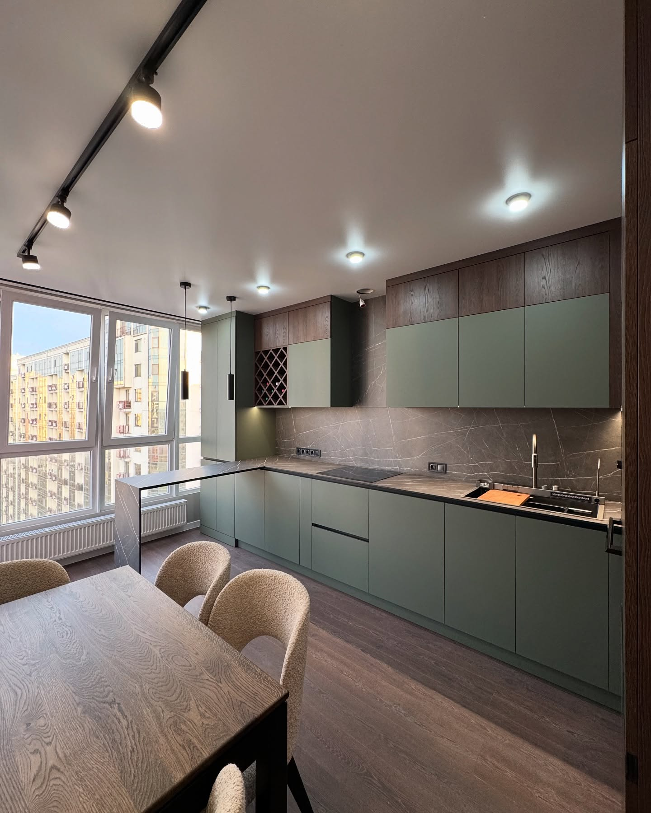

KITCHEN & WARDROBE
کابینت و کمد،
متناسب با سبک زندگی.
طراحی، ساخت و اجرای سفارشی در تبریز۵۰پروژه منتخب
SELECTED WORKS
پروژههای منتخب
روی هر کارت کلیک کنید تا تصاویر کامل، نشانی پروژه و توضیحات متریال را ببینید. تشخیص متریالها بر مبنای ظاهر تصاویر ثبت شده است.
FROM IDEA TO INSTALLATION
از اندازهگیری تا نصب نهایی
- 01بازدید و برداشت دقیق
- 02طراحی سهبعدی و انتخاب متریال
- 03ساخت اختصاصی در کارگاه
- 04نصب، تنظیم و تحویل